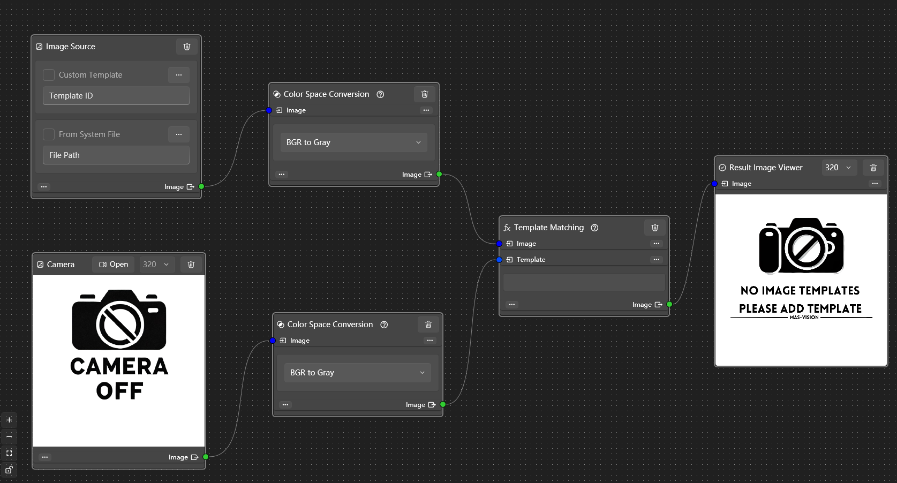

视觉处理流程低代码开发
模块在管理和执行一组相互依赖的模块（Module），通过拓扑排序（Topological Sort）确定模块的执行顺序，确保所有依赖关系在模块执行前得到满足
模块样式
边框颜色定义
- 灰色（Gray）：默认
- 绿色（Green）：初始化成功或正常状态
- 红色（Red）：执行过程中发生了异常
- 橙色（Orange）：输入数据存在问题
- 紫色（Purple）：初始化失败
- 黄色（Yellow）：警告或非致命错误
private Brush _borderBrush = Brushes.Gray;
/// <summary>
/// 获取或设置控件边框颜色
/// </summary>
public Brush BorderBrush {
get => _borderBrush;
set => SetField(ref _borderBrush, value, nameof(BorderBrush));
}
基本服务
模块连接服务，建立、移除模块间的连接关系：
public class ModuleConnectionService : IModuleConnectionService
模块连接线管理，更新、创建、移除表示UI元素的线条：
public class ConnectionLineManager : IConnectionLineManager
模块流程执行管理服务，拓扑排序逻辑依赖关系处理：
public class ExecutionFlowManagerService : IExecutionFlowManager
模块生命周期管理，在主画布中统一管理所有的模块的添加、删除；用于序列化和反序列化：
public class ModuleControlManager : IModuleControlManager
基本事件
连接线管理
连接事件
拓扑排序
队列
1. 拓扑排序中的队列：
初始化阶段
- 入度计数 (inDegrees): 记录每个模块的入度（即依赖于该模块的模块数量）
- 邻接表 (adjacencyList): 记录模块之间的依赖关系，表示哪些模块依赖于当前模块
- 模块连接信息 (modulesWithConnections): 存储每个模块及其连接信息，便于后续处理
构建依赖关系
- 遍历所有连接，更新目标模块的入度，并在邻接表中记录源模块到目标模块的依赖关系
初始化队列
- 找出所有入度为0的模块，这些模块没有任何依赖，可以作为执行的起点，将它们加入到
zeroInDegreeQueue队列中
拓扑排序过程
- 从队列中取出一个模块 (Dequeue)
- 将其加入排序后的模块列表 (sortedModules)
- 遍历该模块的所有依赖模块，减少它们的入度
- 如果某个依赖模块的入度减为0，表示其所有依赖都已被处理，将其加入队列等待处理
循环依赖检测
- 最后检查排序后的模块数量是否与原模块数量相同，若不同，则存在循环依赖，抛出异常
2. 执行过程中的队列：
初始化阶段
- 确保已排序的模块列表不为空且模块已成功编译
- 筛选出所有没有输入依赖的模块（入度为0），这些模块可以立即执行，将它们加入
_readyModules队列 - 清空之前可能存在的任务和输出数据，确保执行过程的独立性和正确性
执行过程
- 从队列中取出一个准备执行的模块
Dequeue - 检查模块是否有下游连接（即是否有依赖它的模块）。若无，则跳过执行
- 异步执行当前模块的逻辑
ExecuteAsync，并等待执行完成 - 存储模块的输出结果，以便后续依赖模块使用
更新依赖模块
- 遍历当前模块的所有连接，找到目标模块并设置其输入数据
- 检查目标模块的所有输入是否已准备好（即所有依赖模块都已执行并提供输出）
- 若目标模块的所有输入均已就绪，将其加入
_readyModules队列，等待执行
概述
通过拓扑排序算法，确定模块之间的任务执行顺序，作为本项目的视觉处理流程主要算法：
有向无环图（Directed Acyclic Graph，简称 DAG）是图论中的一个重要概念，由顶点（vertices）和有方向的边（edges）组成。这种结构的特点是图中不存在从任一顶点出发，最终又回到该顶点的环路（cycle）。这意味着，从图中的任意一个顶点出发，经过一系列的有向边，最终将到达一个或多个没有任何出边的顶点，也称为“终端顶点”或“叶节点”
在有向无环图中，边表示顶点之间的单向关系或依赖关系。由于图中不存在环，从任何一个顶点进行深度优先搜索（DFS）或广度优先搜索（BFS）时，搜索过程总会在无法进一步扩展的顶点处停止，而不会陷入无限循环
拓扑排序是一种在有向无环图中对所有顶点进行线性排序的方法，使得对于任何一对顶点𝑢和𝑣，如果存在从𝑢到𝑣的有向边，那么在排序结果中𝑢必须出现在𝑣之前。这种排序方式在以下领域中尤为重要：
- 任务调度：安排任务执行的顺序，确保所有前置任务都在后续任务之前完成
- 项目构建：在软件编译过程中正确地编译依赖库或模块
- 编译优化：确定变量定义的顺序，以优化运行时性能
- 数据流分析：分析程序中数据的流向和生命周期
有向无环图示例1：
A
/ \
B C
\ /
D
顶点𝐴指向顶点𝐵和𝐶，而𝐵和 𝐶都指向𝐷，拓扑排序的一种可能结果是𝐴,𝐵,𝐶,𝐷这表示首先处理𝐴然后是𝐵和𝐶（这两个可以互换顺序、亦或同时执行，因为它们之间没有依赖），最后处理𝐷
有向无环图示例2：
E
/ \
F G
\ /
H
/ \
I J
顶点E指向顶点F和G，而F和G都指向H，接着H指向I和J，一种可能的拓扑排序结果是E, F, G, H, I, J这个顺序表示首先处理E，接着可以同时或依次处理F和G（因为它们之间没有依赖关系），然后处理H，最后处理I和J
代码
private List<ModuleWithConnections> TopologicalSort() {
// 初始化各模块的入度计数字典
var inDegrees = new Dictionary<Guid, short>();
// 初始化邻接表，记录模块的依赖关系
var adjacencyList = new Dictionary<Guid, List<(Guid, short)>>();
// 用于存储模块及其连接信息的字典
var modulesWithConnections = new Dictionary<Guid, ModuleWithConnections>();
// 遍历所有模块，初始化入度为0，邻接表为空，连接信息列表为空
foreach (var module in _modules.Values) {
inDegrees[module.ModuleId] = 0;
adjacencyList[module.ModuleId] = [];
modulesWithConnections[module.ModuleId] = new ModuleWithConnections(module, new List<(Guid, short)>());
}
// 遍历所有连接，更新目标模块的入度和源模块的邻接表和连接信息
foreach (var connection in _connectionService.GetAllConnections()) {
inDegrees[connection.TargetId]++;
adjacencyList[connection.SourceId].Add((connection.TargetId, connection.TargetInputIndex));
modulesWithConnections[connection.SourceId].Connections.Add((connection.TargetId, connection.TargetInputIndex));
}
// 查找所有入度为0的模块，作为起始点
var zeroInDegreeQueue = new Queue<ModuleWithConnections>(modulesWithConnections.Values.Where(m => inDegrees[m.Module.ModuleId] == 0));
// 准备一个列表存储排序后的模块
var sortedModules = new List<ModuleWithConnections>();
// 使用队列进行拓扑排序
while (zeroInDegreeQueue.Count > 0) {
var moduleWithConnections = zeroInDegreeQueue.Dequeue();
sortedModules.Add(moduleWithConnections);
// 遍历当前模块的所有依赖模块
foreach (var (dependentModuleId, inputIndex) in adjacencyList[moduleWithConnections.Module.ModuleId]) {
// 减少依赖模块的入度，因为其一个依赖来源已经被处理
inDegrees[dependentModuleId]--;
// 如果依赖模块的入度变为0，则加入队列
if (inDegrees[dependentModuleId] == 0) {
zeroInDegreeQueue.Enqueue(modulesWithConnections[dependentModuleId]);
}
}
}
// 如果排序后的模块数量不等于原模块数量，说明存在循环依赖
if (sortedModules.Count != _modules.Count) {
var unsortedModules = _modules.Values.Where(m => !sortedModules.Select(sm => sm.Module.ModuleId).Contains(m.ModuleId));
string message = "存在循环依赖，涉及模块: " + string.Join(", ", unsortedModules.Select(m => m.ModuleId));
throw new InvalidOperationException(message);
}
return sortedModules;
}
示例

通过TopologicalSort方法进行拓扑排序后的结果：
private List<ModuleWithConnections> _sortedModules;
_sortedModules = TopologicalSort();
- A.1.DataMaster.Modules.MAS.Controls.ImageProceFlow.ImageSourceViewModel
- B.2.DataMaster.Modules.MAS.Controls.ImageProceFlow.CameraViewModel
- C.3.DataMaster.Modules.MAS.Controls.ImageProceFlow.ColorConvertViewModel
- D.4.DataMaster.Modules.MAS.Controls.ImageProceFlow.ColorConvertViewModel
- E.5.DataMaster.Modules.MAS.Controls.ImageProceFlow.TemplateMatchingViewModel
- F.6.DataMaster.Modules.MAS.Controls.ImageProceFlow.ResultImageViewerViewModel
A,B,C,D,E,F
如果按照拓扑后的结果直接顺序执行的话A -> B -> C -> D -> E -> F
很显然如果直接按照拓扑之后的顺序执行那么肯定是错误的，因为模块间都要进行数据传递
B A
| |
D C
\ /
E
|
F
模块之间的依赖关系如下：
- 模块
A和 模块B是起始模块，它们没有输入依赖（入度为0） - 模块
C依赖于 模块`A的输出 - 模块
D依赖于 模块B的输出 - 模块
E依赖于 模块C和 模块`D的输出 - 模块
F是最终模块，依赖于 模块E的输出
执行逻辑：
1. 模块A和模块B作为起始点，它们可以并行执行，因为它们不需要任何输入数据
2. 一旦 模块A和 模块B执行完成，它们的输出数据将分别传递给模块C和模块D
3. 模块C和 模块D在接收到所需的数据后开始执行。这两个模块可以并行执行，因为它们之间没有依赖关系
4. 模块E必须等待模块C和模块D都执行完成并获得它们的输出数据，因为它依赖于这两个模块的输出。一旦模块C和模块D的输出准备就绪，模块E将合并或处理这些数据，并执行
5. 最后，模块F将等待 模块E完成执行，将模块E的输出作为输入数据。完成后，整个流程结束
代码：
入度为0的模块不需要设置输入数据，那么将省略这一步
void SetInputData(short index, object input);
出度为0的模块也不需要设置输出数据，也会省略这一步
Task<object> ExecuteAsync();
所有模块都有自身的连接信息
public abstract List<Guid> InputModuleIds { get; set; }
public abstract List<Guid> OutputModuleIds { get; set; }
代码：
public async Task ExecuteAllAsync() {
// 如果已排序模块列表为空或未初始化，抛出异常，说明没有注册任何模块
if (_sortedModules == null || _sortedModules.Count == 0) {
throw new InvalidOperationException("未注册任何模块");
}
// 如果模块没有成功编译，抛出异常，防止执行未编译的模块
if (!_isCompiledSuccessfully) {
throw new InvalidOperationException("尝试执行模块，但模块未成功编译或未编译");
}
// 初始化队列，筛选出入度为0的模块（即没有输入依赖的模块），这些模块可以立即执行
_readyModules = new Queue<ModuleWithConnections>(_sortedModules.Where(m => m.Module.InputModuleIds.Count == 0));
// 清空存储模块任务的字典，以防之前有未清理的任务
_moduleTasks.Clear();
// 清空存储模块输出数据的字典，确保执行时不会使用之前的残留数据
_moduleOutputs.Clear();
// 当队列中还有可以执行的模块时
while (_readyModules.Count > 0) {
// 从队列中取出一个准备执行的模块
var currentModule = _readyModules.Dequeue();
// 如果当前模块没有任何连接（出度为0），则执行结束，不再处理下游模块
if(currentModule.Connections.Count == 0) {
continue;
}
// 调用当前模块的异步执行方法，开始执行模块的逻辑操作，返回一个执行任务
var executionTask = currentModule.Module.ExecuteAsync();
// 将模块的执行任务存储在任务字典中，使用模块的唯一标识符作为键
_moduleTasks[currentModule.Module.ModuleId] = executionTask;
// 等待任务执行完成，获取执行结果（输出值）
var output = await executionTask;
// 将当前模块的执行结果存储在模块输出字典中，值为包含输出的列表
_moduleOutputs[currentModule.Module.ModuleId] = [output];
// 遍历当前模块的所有连接（即输出数据要传递到的目标模块及其输入索引）
foreach (var (TargetModuleId, TargetInputIndex) in currentModule.Connections) {
// 在已排序的模块列表中查找对应的目标模块
var targetModule = _sortedModules.FirstOrDefault(m => m.Module.ModuleId == TargetModuleId);
// 如果找到目标模块，则继续处理
if (targetModule != null) {
// 设置目标模块的指定输入数据，将当前模块的输出数据传递给目标模块
targetModule.Module.SetInputData(TargetInputIndex, output);
// 检查目标模块的所有输入模块是否都已经有输出数据（即所有输入都已准备好）
if (targetModule.Module.InputModuleIds.All(_moduleOutputs.ContainsKey)) {
// 如果所有输入都已准备好，将目标模块加入到准备执行的队列中
_readyModules.Enqueue(targetModule);
}
}
}
}
}